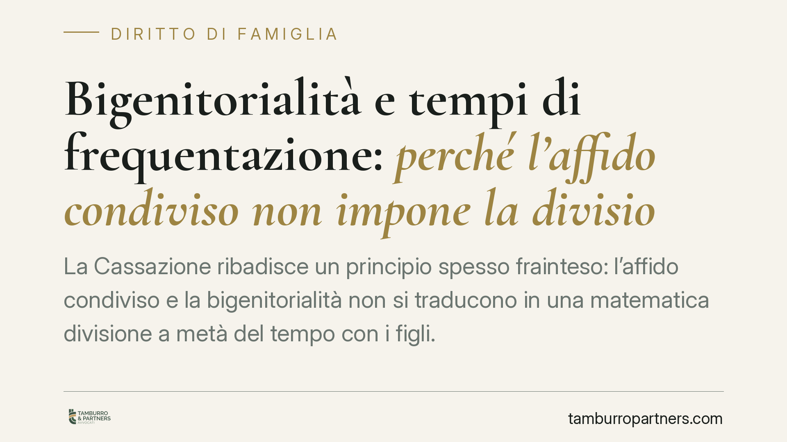

Bigenitorialità e tempi di frequentazione: perché l'affido condiviso non impone la divisione paritaria
La Cassazione ribadisce un principio spesso frainteso: l'affido condiviso e la bigenitorialità non si traducono in una matematica divisione a metà del tempo con i figli. Il criterio guida resta l'interesse del minore, valutato in concreto e non in modo aritmetico. Un chiarimento utile a chi affronta una separazione e teme automatismi che non esistono.

Il principio: rapporto equilibrato, non spartizione paritaria
Uno dei malintesi più frequenti nei procedimenti di separazione riguarda il significato di "bigenitorialità". Molti genitori la interpretano come diritto a una suddivisione dei tempi al 50%, come se la cura dei figli potesse essere misurata al cronometro. Non è così.
La bigenitorialità è il diritto del figlio a conservare un rapporto significativo e continuativo con entrambi i genitori, anche dopo la fine della convivenza. È un diritto del minore, non una prerogativa dell'adulto. Questa prospettiva cambia tutto: il parametro non è l'equità contabile tra padre e madre, ma il benessere concreto del bambino.
Inquadramento normativo
Il riferimento è l'art. 337-ter del codice civile, che impone al giudice di adottare i provvedimenti relativi alla prole con esclusivo riferimento all'interesse morale e materiale della stessa. La norma stabilisce che il figlio minore ha diritto di mantenere un rapporto *equilibrato e continuativo* con ciascun genitore. La parola chiave è "equilibrato": non "eguale", non "paritario".
L'equilibrio è un concetto funzionale, non aritmetico. Tiene conto dell'età dei figli, delle esigenze scolastiche, della distanza tra le abitazioni, dell'organizzazione lavorativa dei genitori e della capacità di ciascuno di garantire stabilità. L'art. 337-sexies c.c. disciplina poi l'assegnazione della casa familiare, che segue anch'essa l'interesse dei figli e non il mero riparto dei tempi.
Su questa linea si collocano orientamenti consolidati della Corte di Cassazione. Le Sezioni Unite, con la sentenza n. 32359/2018, hanno chiarito la centralità del superiore interesse del minore nelle decisioni che lo riguardano. Pronunce successive hanno ribadito che la bigenitorialità non si risolve in una rigida parità temporale, ma nella salvaguardia di un rapporto effettivo e di qualità con entrambi i genitori.
Cosa cambia per chi si separa
La conseguenza pratica è che non esiste alcun automatismo verso la divisione a metà. Il genitore che rivendica tempi paritari "per principio" rischia di impostare male il confronto, giudiziale o negoziale.
Il giudice valuta la situazione concreta. Può stabilire tempi diversi tra i due genitori senza per questo violare la bigenitorialità, purché il rapporto con entrambi resti significativo. Allo stesso modo, un collocamento prevalente presso un genitore non esclude affatto l'affido condiviso: sono piani distinti.
Questo vale anche nella fase negoziale. Impostare la trattativa su rivendicazioni quantitative, anziché sulle reali esigenze dei figli, allunga i tempi e irrigidisce i rapporti. Al contrario, un progetto di cura credibile e sostenibile è l'argomento più forte, sia davanti al giudice sia nella negoziazione tra le parti.
Cosa fare in concreto
- Documentate la vostra effettiva capacità organizzativa. Orari di lavoro, prossimità alla scuola, rete di supporto: sono questi elementi, non le percentuali, a orientare la decisione.
- Costruite un piano genitoriale concreto. Indicate come intendete gestire scuola, attività, salute e festività. Un progetto realistico conta più di una richiesta di tempi paritari fine a sé stessa.
- Mettete al centro il figlio, non la contrapposizione con l'altro genitore. Il giudice valuta la capacità di cooperare: l'ostilità reiterata viene letta in senso sfavorevole.
- Valutate la negoziazione assistita prima del contenzioso. Un accordo costruito sulle esigenze dei figli è spesso più stabile e meno conflittuale di una decisione imposta.
- Fatevi assistere per tempo. Consigliamo di definire la strategia prima di assumere posizioni rigide, difficili da modificare in corso di procedimento.
In sintesi
La bigenitorialità tutela il legame del figlio con entrambi i genitori, ma non impone la bilancia. Chi affronta una separazione farebbe bene a ragionare in termini di qualità e continuità del rapporto, non di quote di tempo. È questo l'approccio che il quadro normativo e gli orientamenti della Cassazione premiano.
---
*Contributo informativo a cura di Tamburro & Partners Avvocati. Non costituisce parere legale.*
Ogni famiglia ha il suo equilibrio.
Separazione, divorzio, affidamento, assegno: se vuoi un confronto riservato su una specifica situazione, scrivi allo studio. Ti rispondiamo entro un giorno lavorativo.